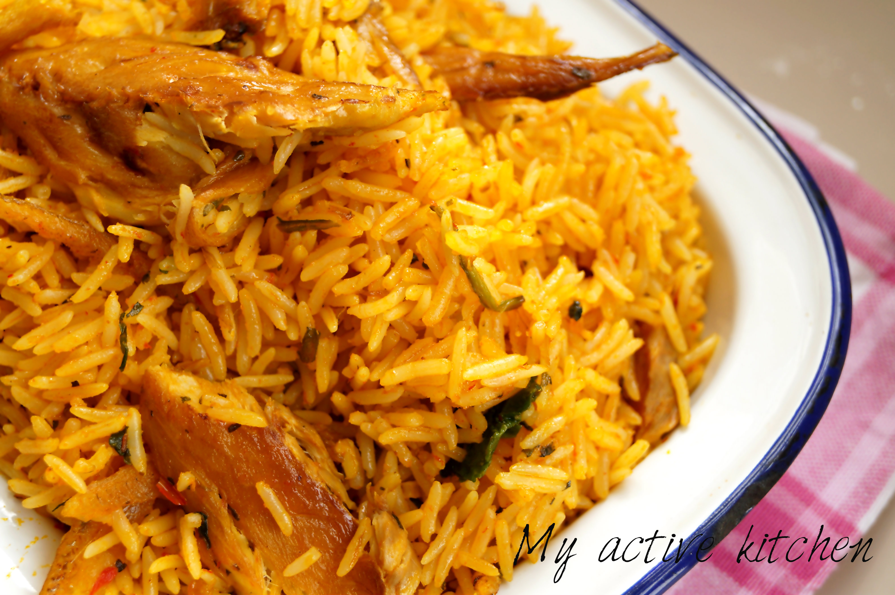

Concoction Rice

Description
Concoction rice is a term commonly used in Nigeria to refer to a style of cooking rice that involves mixing various ingredients and spices together to create a flavorful and hearty dish. It's often associated with homemade cooking and can vary widely in terms of ingredients and preparation methods.
While there isn't a single specific recipe for concoction rice, it typically involves cooking rice with a variety of ingredients such as vegetables, meats, fish, spices, and seasonings.
Ingredients
- Rice
- Palm oil
- Tomatoes
- Paprika peppers (Shombo)
- Bell Peppers (Tatashe)
- Iru (Locust bean)
- Crayfish
- Onions
- Cow Skin (Kpomo)
- Dried fish
- Scent leaves
- Seasoning (Maggi,etc.)
- Salt
Steps
- First, parboil the rice. Once it boils, wash out quickly with cold water.
- In a dry pot on heat, add in palm oil.
- Add in chopped onions, fry for a minute.
- Add in Iru, fry for another minute.
- Add in the blended tatashe, tomatoes and peppers, fry for 5 minutes till its dry.
- Add in crayfish, seasoning and salt.
- Add in the washed kpomo and dry fish, cook for 5 minutes.
- Add in a little water.
- Add the parboiled rice and top the water to be the same level with the rice.
- Cover and cook till the water is almost dry.
- Add in scent leaves, stir and cover to cook for 2 minutes.